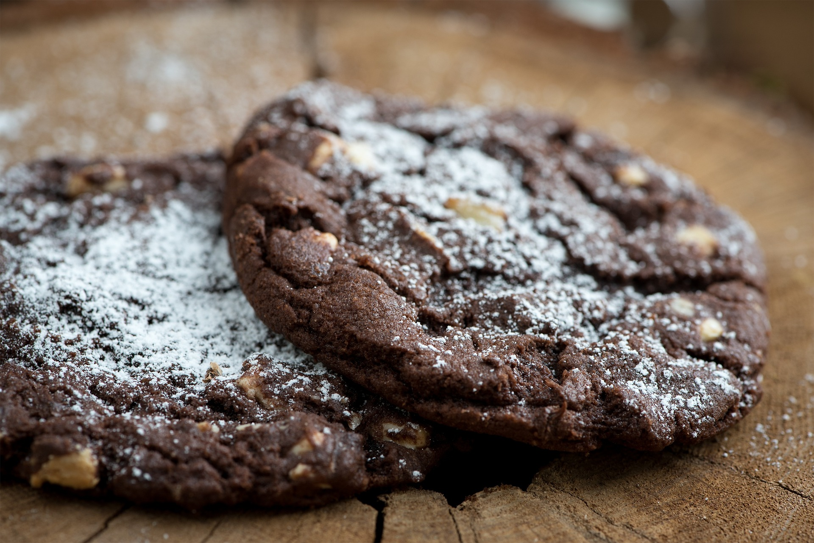
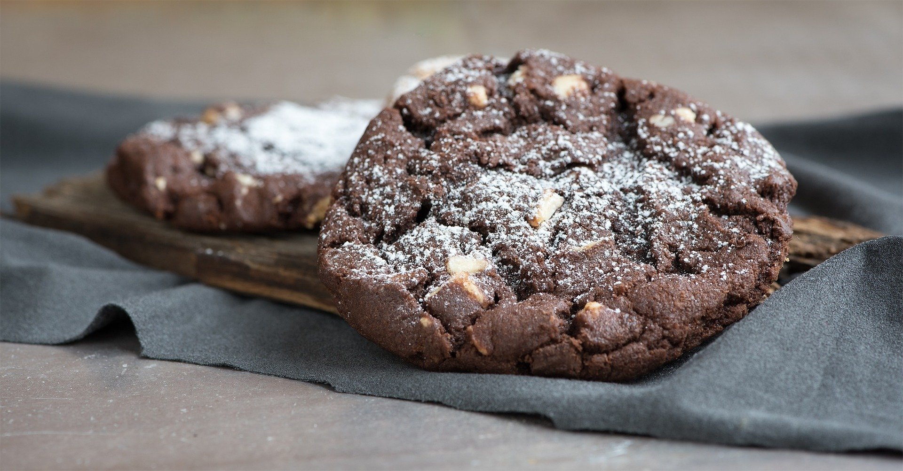

Kakaolu Çatlak Kurabiye


Malzemeler
- 4 yemek kaşığı kakao
- 1 su bardağı şeker
- 0.5 çay bardağı sıvı yağ
- 2 adet yumurta
- 6 yemek kaşığı un
- 1 paket vanilya & 1
paket kabartma tozu
- Pudra şekeri
Yapılışı
- Kakao, şeker ve sıvı yağı karıştıralım.
- Yumurtanın 1 tanesini kıralım, karıştıralım. Diğer
yumurtayı kıralım, karıştıralım.
- Un, vanilya ve kabartma tozunu ilave ederek karıştıralım.
- Streç film ile kapatalım ve en az 2, mümkünse
4-5 saat buzdolabında soğutalım.
- Hamurdan parçalar alarak pudra şekeriyle yuvarlayalım.
- 180°C fırında 10 dakika pişirelim.